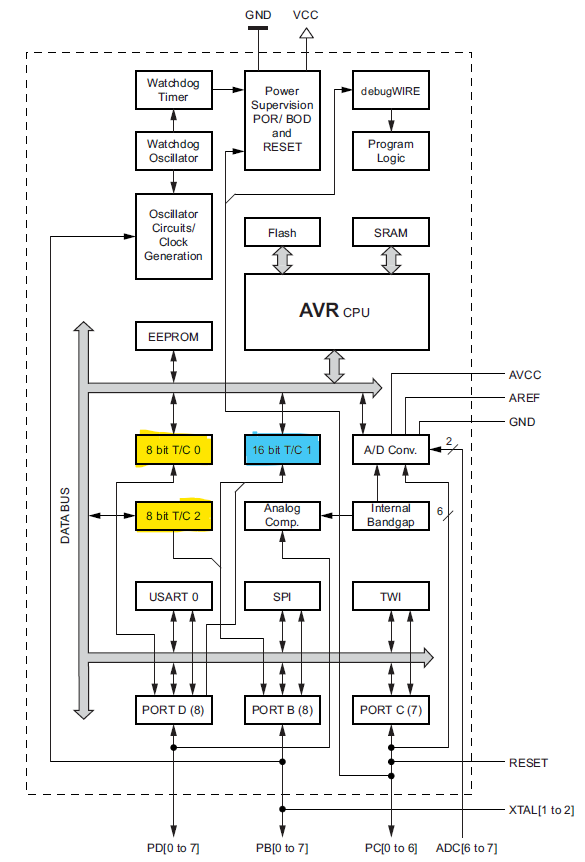
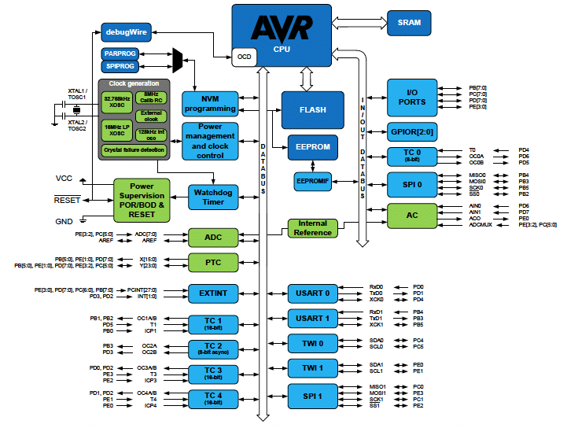
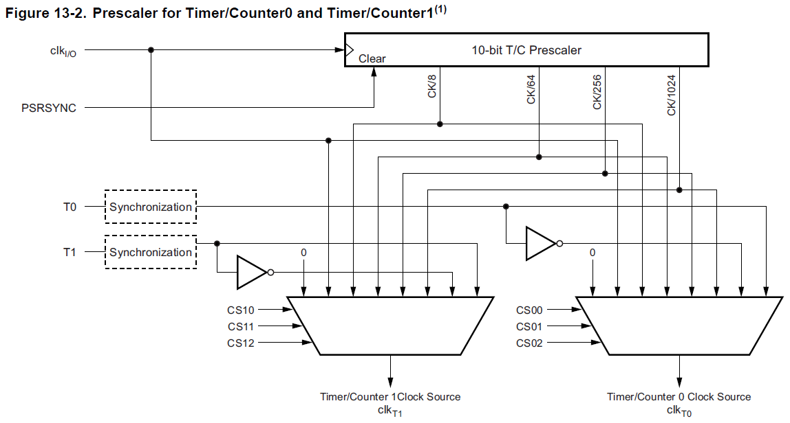
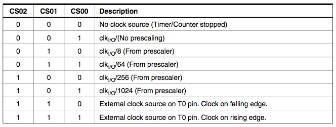
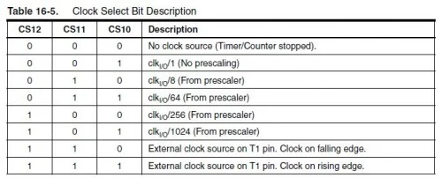
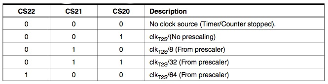
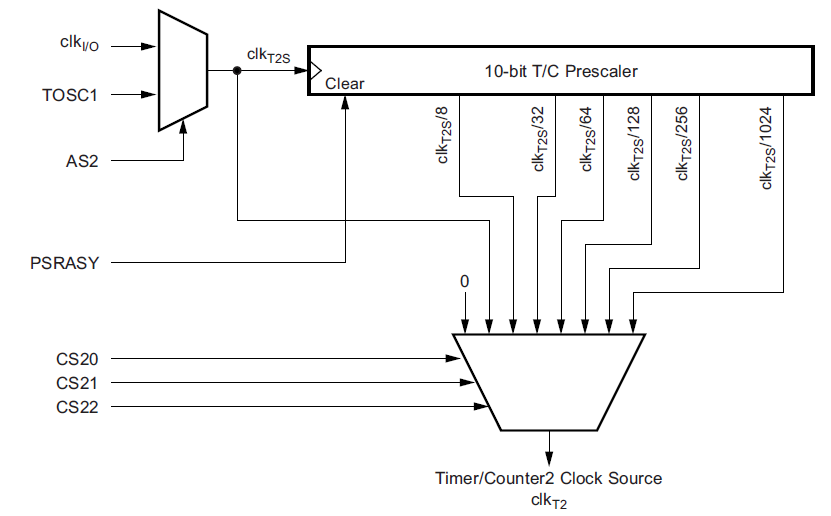
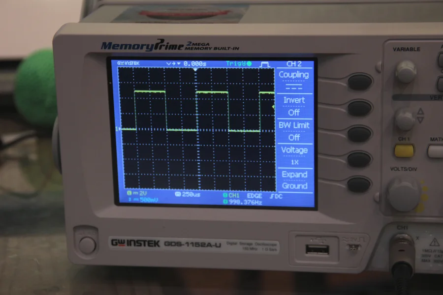
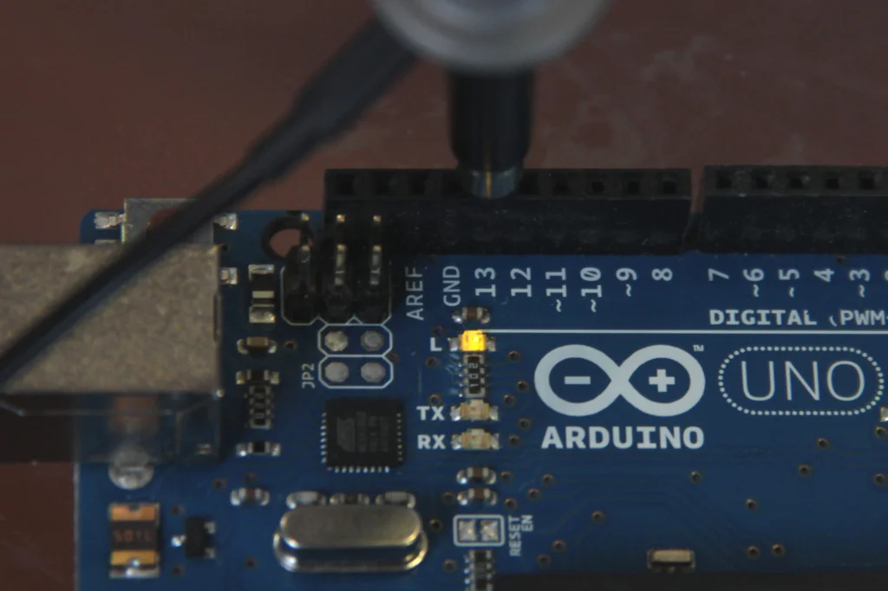
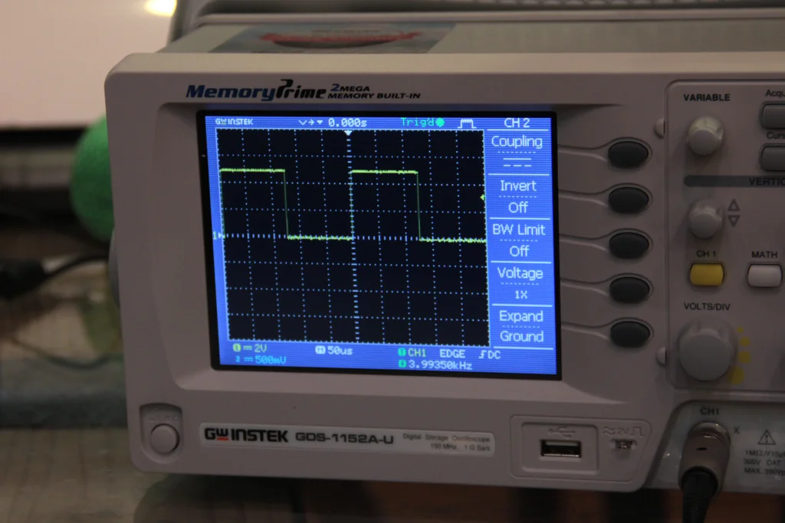

Arduino & Interrupções
Referências adotadas
Página oficial do Arduino: Reference > Libraries > TimerInterrupt - Arduino Reference -- mas esta página é algo superficial e não traz nenhum exemplo ou informações relevantes. Informa que existe uma biblioteca capaz de suportar até 16 "ISR"s (Interrupt Service Routines) usando hadrware do C presentes em placas como Arduino Nano,Arduino Uno, Arduino Mega, etc. Para fazer esta biblioteca funcionar é necessário ativar o Library Manager da IDE do Arduino, que estava na versão 1.8.0 em 25/10/2022.
Página da Amanda Ghassaei no Instructables/Circuits >> Arduino Timer Interrupts, que é que usaremos como base.
Outras páginas interessantes:
- Página da ForProjects: Tutorial sobre Interrupções e Timer´s no Arduino;
- Página da Digi-Key: Como evitar a função
delay()no Arduino Sketch;- Página da Digi-Key: Como usar interrupções (de hardware) para detectar entradas do usuário.
- Datasheet do ATmega168
O que são interrupções
As interrupções por temporizador (timer), ou por software (ao estilo de uma task síncrona de sistemas operacionais de tempo-real) permitem que você execute uma tarefa em intervalos especificos de tempo, respeitando certo período de amostragem ou periodo de scanning, independentemente do que mais esteja acontecendo em seu código.
Neste tutorial é explicado como configurar e executar uma interrupção no modo "limpeza" de temporizaçao no modo comparação ou modo "CTC" (Clear Timer on Compare Match mode).
Normalmente, quando você escreve um código na IDE de Arduino (Arduino sketch), o Arduino executa todos os comandos encapsulados na função loop() na ordem em que eles são escritos. No entanto, é difícil cronometrar eventos dentro do bloco loop() { ... }. Alguns comandos demoram mais do que outros para serem executados, alguns dependem de instruções condicionais (if, while...) e algumas funções da biblioteca Arduino (como digitalWrite ou analogRead) são compostas por muitos comandos.
As interrupções por timmer do Arduino permitem pausar momentaneamente a sequência normal de eventos que ocorrem na função loop() em intervalosde tempo precisos, enquanto você executa um conjunto separado de comandos. Uma vez que esses comandos são feitos, o Arduino retoma onde estava no loop().
Interrupções são úteis para:
-
medir um sinal de entrada em intervalos de tempo igualmente e rigorosamente espaçados (obedecendo à uma frequência de amostragem fixa);
-
determinar o intervalo de tempo entre dois eventos;
-
enviar um sinal de uma frequência específica gerando periodicamente os dados de uma série calculada...
-
determinar a velocidade de um motor, lendo informações periódicas de outro contador que recebe pulsos de um encoder incremental (sensor de velocidade).
Como fazer?
Existem algumas maneiras de programar interrupções. Este tutorial se concentra no tipo que parecer ser o mais útil/flexível, chamado de Clear Timer on Compare Match ou CTC Mode.
Este tutorial serve especificamente para os temporizadores do Arduino Uno (e qualquer outro Arduino com C ATMEL 328/168... Lilypad, Duemilanove, Diecimila, Nano...).
Clicar aqui para revelar o Diagrama de Blocos geral do ATmega168

Clicar aqui para revelar o Diagrama em blocos mostrando registradores do ATmega168

O C do Arduino Uno possui 3 temporizadores chamados:
-
Timer0 8 bits;
-
Timer1 16 bits, e;
-
Timer2 8 bits.
Cada um dos temporizadores tem um contador que é incrementado a cada "tick" do clock do C. As interrupções do temporizador CTC são acionadas quando o contador atinge um valor especificado (overflow), armazenado num registrador específico usado para realizar a comparação. Uma vez que um contador de temporizador atinja esse valor, ele "recicla" (volta a zero) no próximo tick do clock do temporizador, então ele continuará a contar até o valor de comparação novamente e assim sucessivamente. Ao escolher o valor do registrador de correspondência de comparação ("compare match register") e definir a velocidade com que o temporizador incrementa o contador, você pode controlar a frequência de interrupções do temporizador.
O primeiro parâmetro abordado é quanto a velocidade com que o temporizador incrementa o contador. O clock do Arduino roda a 16 MHz, esta é a velocidade mais rápida que os temporizadores podem incrementar seus contadores. A 16MHz cada tick do contador ocorrere a cada: 1/16.000.000 segundos ou 63 ns. Então um contador levará 10/16.000.000 segundos para atingir o valor de 9 (lembrar que o contador conta de 0 à 9 = 10 estados diferentes) e assim vai levar 100/16.000.000 segundos para atingir um valor de 99, ou 6,25 segundos ou simplesmente: 6,25 segundos para completar esta contagem.
Em muitas situações, você verá que definir a velocidade do contador para 16MHz é muito rápido.
O Timer0 o Timer2 são temporizadores de 8 bits, o que significa que eles podem armazenar um valor máximo de contagem até 255 ().
O Timer1 é um temporizador de 16 bits, o que significa que ele pode armazenar um valor máximo de contagem de 65.535 ().
Uma vez que um contador atinja seu máximo, ele voltará a zero (isso é o chamado de "recycle", que ocorre no overflow do contador). Isso significa que a 16MHz, mesmo que se defina o registro de correspondência de comparação com o valor máximo do contador, as interrupções ocorrerão a cada 256/16.000.000 segundos (s) para os contadores de 8 bits, e a cada 65.536/16.000.000 ( ms) para o contador de 16 bits.
Claramente, isso não é muito útil se você só quiser interromper uma vez por segundo.
Em vez disso, você pode controlar a velocidade da incrementação do contador de temporizador usando algo chamado prescaler. Umprescaler fixa a velocidade de clock de um temporizador de acordo com a seguinte equação:
Assim:
- prescaler =1 incrementará o contador em 16MHz;
- prescaler = 8 irá incrementá-lo a 2MHz ();
- prescaler = 64, resultará em 250kHz (), e assim por diante.
O C ATMEL 328/168 permite definir o prescaler apenas no valores fixos: 1, 8, 64, 256 e 1024. Isto depende da configuração de certos bits do registrador Clock Select (CS) que define a fonte de clocks dos temporizadores.
Clicar aqui para revelar a Figura 13-2 do Datasheet do ATmega169 com detalhes sobre o *prescaler* para o *timer0* e *timer1*.

As tabelas a seguir destacam os bits e formas de configuração dos temporizadores.
Segue tabela de configuração do Clock Select register para o timer0 (CS02:0):

Segue tabela de configuração do Clock Select register para o timer1 (CS12:0):

Segue tabela de configuração do Clock Select register para o timer2 (CS22:0):

Clique aqui para enteder melhor o prescaler para o timer2.

Agora podemos calcular a frequência de interrupção pela seguinte equação:
o está lá porque o registrador comparador de correspondência (compare match register) começa a contar em 0 (0 é um estado da contagem).
Podemos organizar a equação acima, para calcular o valor necessário para o registrador comparador de correspondência (compare match register) gerar a frequência de interrupção desejada:
Note Lembre-se ainda que quando você usa os Timer0 e o Timer2 (8 bits) este número deve ser menor que 256, e menos de 65536 para o Timer1 (16 bits). E nem todos os valores estão disponíveis para o prescaler, apenas os valores: 1, 8, 64, 256 e 1024.
Exemplo: suponha que você queira uma interrupção a cada segundo (frequência de 1Hz), terá que considerar:
Com um prescaler=1024 teremos:
Com este resultado (), concluímos que devemor usar o Timer1 para esta interrupção.
Resumo sobre temporizadores (timers)
| Temporizador | Observações |
|---|---|
| Timer0 | 8 bits (0 ~ 255)Usado nas funções:delay(), millis() e micros().Mudar o registrador Timer0 vai influenciar estas funções. |
| Timer1 | 16 bits (0 ~65535)A biblioteca Servo usa o Timer1 no Arduino Uno (assim como usar o Timer5 no Arduino Mega). |
| Timer2 | 8 bits (0 ~ 255)As funções tone() e noTone() usam o Timer2. |
| Timer3,Timer4,Timer5 | 16 bitsSomente disponível na placa Arduino Mega. |
Note a função
analogWrite()também usa algum timer -- esta função está associada com o uso de PWM no Arduino.
É possível alterar o comportamento de um temporizador alterando os registrdores associados com o temporizador:
| Registrador | Observação |
|---|---|
| TCCRx | Timer/Counter Control RegisterRegistro de controle do Temporizador/ContadorO pre-scaler pode ser configurado aqui. |
| TCNTx | Timer/Counter RegisteRegistrador do Temporizador/ContadorO valor atual do temporizador é guardado aqui. |
| OCRx | Output Compare RegisterRegistro Comparador (de saída) |
| ICRx | Input Capture RegisterRegistro de Captura (entrada)Nota: apenas para timer's de 16 bits. |
| TIMSKx | Timer/Counter Interrupt Mask RegisterRegistrador máscara para interrupção via temporizador/contador.Usado para habilitar/desabilitar interrupções. |
| TIFRx | Timer/Counter Interrupt Flag RegisterRegistrador flag de interrupção do temporizador/contador.Indica uma interrupção pendente. |
Codificação de uma ISR no Arduíno
A configuração de interrupções por software (ou timer) é realizada dentro do bloco setup(..){..} na IDE do Arduino (Arduino sketch).
O próximo bloco de código destaca como programar 3 interrupções diferentes, cada uma associada com um temporizador diferente -- esta configuração é feita apenas no bloco setup(..){..} na IDE do Arduino (Arduino sketch). A ideia é:
- Usar o timer0 para gerar uma interrupção à cada 2 KHz (a cada 0,5 ms);
- Usar o timer1 para gerar uma interrupção à cada 1 Hz;
- Usar o timer2 para gerar uma interrupção à cada 8 KHz (a cada 0,125 ms = 125 ns).
Segue o código exemplo:
void setup(){
cli();//stop interrupts
//set timer0 interrupt at 2kHz
TCCR0A = 0;// set entire TCCR0A register to 0
TCCR0B = 0;// same for TCCR0B
TCNT0 = 0;//initialize counter value to 0
// set compare match register for 2khz increments
OCR0A = 124;// = (16*10^6) / (2000*64) - 1 (must be <256)
// turn on CTC mode
TCCR0A |= (1 << WGM01);
// Set CS01 and CS00 bits for 64 prescaler
TCCR0B |= (1 << CS01) | (1 << CS00);
// enable timer compare interrupt
TIMSK0 |= (1 << OCIE0A);
//set timer1 interrupt at 1Hz
TCCR1A = 0;// set entire TCCR1A register to 0
TCCR1B = 0;// same for TCCR1B
TCNT1 = 0;//initialize counter value to 0
// set compare match register for 1hz increments
OCR1A = 15624;// = (16*10^6) / (1*1024) - 1 (must be <65536)
// turn on CTC mode
TCCR1B |= (1 << WGM12);
// Set CS10 and CS12 bits for 1024 prescaler
TCCR1B |= (1 << CS12) | (1 << CS10);
// enable timer compare interrupt
TIMSK1 |= (1 << OCIE1A);
//set timer2 interrupt at 8kHz
TCCR2A = 0;// set entire TCCR2A register to 0
TCCR2B = 0;// same for TCCR2B
TCNT2 = 0;//initialize counter value to 0
// set compare match register for 8khz increments
OCR2A = 249;// = (16*10^6) / (8000*8) - 1 (must be <256)
// turn on CTC mode
TCCR2A |= (1 << WGM21);
// Set CS21 bit for 8 prescaler
TCCR2B |= (1 << CS21);
// enable timer compare interrupt
TIMSK2 |= (1 << OCIE2A);
sei();//allow interrupts
}//end setup
Note alguns detalhes desta configuração:
-
Observe como o valor do OCR#A (registrador Compare match value) muda para cada uma das configurações do temporizador. Como explicado na última parte, este valor é calculado de acordo com a seguinte equação:
Porém, lembre-se que quando você usa Timer0 ou Timer2 este número deve ser inferior a 256, e menos que 65536 para o Timer1. Note também que as configurações entre os 3 temporizadores (timers) diferem ligeiramente na linha de comando que ativa o modo CTC:
// TCCR_A = ativa modo CTC para timer_ TCCR0A |= (1 << WGM01); // ativa modo CTC para o timer0 TCCR1B |= (1 << WGM12); // ativa modo CTC para o timer1 TCCR2A |= (1 << WGM21); // ativa modo CTC para o timer2Estas informações estão presentes da folha de dados (datasheet) do ATMEL 328/168.
-
Note também como o ajuste do prescaler segue as definiçoes mostradas nas tabelas anteriores:
// TCCR_B = Ajute dos bits CS_2, CS_1 e CS_0 do prescaler para timer_ TCCR2B |= (1 << CS22); // Define o bit CS_2 do prescaler do timer2 para 64 TCCR1B |= (1 << CS11); // Define o bit CS_1 do prescaler do timer1 para 8 TCCR0B |= (1 << CS02) | (1 << CS00); // Define o bit CS_2 e CS_0 do prescaler do timer0 para 1024Obs.: Note que nesta última etapa, que existem diferentes opções de prescaling para os diferentes temporizadores. Por exemplo, o Timer2 não tem a opção de prescaler = 1024.
-
Os comandos (na IDE do Arduino) que você deseja executar durante essas interrupções de temporizador seguem o formato:
ISR(TIMER0_COMPA_vect){ // alterar de 0 para 1 para passar do Timer1 para o Timer2 // Código para tratamento da interrupção segue abaixo... }Atenção: este bloco de código deve estar localizado fora das funções
setup()eloop().
Exemplo (código completo)
Exemplo: o código a seguir configura e executa 3 interrupções do temporizador:
- Fazer piscar um led à 2 Hz, isto é, ele fica aceso durante 1 segundo e apagado outro tanto 1 segundo. Uso de iterrupção associado com o Timer1, operando na frequência de 1 Hz; é realizado um "toggle" no pino 13 (do Led).
- Geração de uma onda quadrada de 1 KHz (tensão de saída entre 0 e 5V). Foi usada uma interrupção associada com o Timer0, operando na frequencia de 2 KHz; é realizado um "toggle" no pino 8, portanto a frequência de saída corresponde à metade da programada via interrupção.
- Geração de outra onda quadrada vibrando à 4 KHz. Neste caso, foi adotada interrupção associada com o Timer2 operando à 8 KHz; um "toggle" foi realizado no pino 9, onde será verificada então uma onda quadrada gerada à 4 KHz.
Segue o código:
//timer interrupts
//by Amanda Ghassaei
//June 2012
//https://www.instructables.com/id/Arduino-Timer-Interrupts/
/*
* This program is free software; you can redistribute it and/or modify
* it under the terms of the GNU General Public License as published by
* the Free Software Foundation; either version 3 of the License, or
* (at your option) any later version.
*
*/
//timer setup for timer0, timer1, and timer2.
//For arduino uno or any board with ATMEL 328/168.. diecimila, duemilanove, lilypad, nano, mini...
//this code will enable all three arduino timer interrupts.
//timer0 will interrupt at 2kHz
//timer1 will interrupt at 1Hz
//timer2 will interrupt at 8kHz
//storage variables
boolean toggle0 = 0;
boolean toggle1 = 0;
boolean toggle2 = 0;
void setup(){
//set pins as outputs
pinMode(8, OUTPUT);
pinMode(9, OUTPUT);
pinMode(13, OUTPUT);
cli();//stop interrupts
//set timer0 interrupt at 2kHz
TCCR0A = 0;// set entire TCCR2A register to 0
TCCR0B = 0;// same for TCCR2B
TCNT0 = 0;//initialize counter value to 0
// set compare match register for 2khz increments
OCR0A = 124;// = (16*10^6) / (2000*64) - 1 (must be <256)
// turn on CTC mode
TCCR0A |= (1 << WGM01);
// Set CS01 and CS00 bits for 64 prescaler
TCCR0B |= (1 << CS01) | (1 << CS00);
// enable timer compare interrupt
TIMSK0 |= (1 << OCIE0A);
//set timer1 interrupt at 1Hz
TCCR1A = 0;// set entire TCCR1A register to 0
TCCR1B = 0;// same for TCCR1B
TCNT1 = 0;//initialize counter value to 0
// set compare match register for 1hz increments
OCR1A = 15624;// = (16*10^6) / (1*1024) - 1 (must be <65536)
// turn on CTC mode
TCCR1B |= (1 << WGM12);
// Set CS12 and CS10 bits for 1024 prescaler
TCCR1B |= (1 << CS12) | (1 << CS10);
// enable timer compare interrupt
TIMSK1 |= (1 << OCIE1A);
//set timer2 interrupt at 8kHz
TCCR2A = 0;// set entire TCCR2A register to 0
TCCR2B = 0;// same for TCCR2B
TCNT2 = 0;//initialize counter value to 0
// set compare match register for 8khz increments
OCR2A = 249;// = (16*10^6) / (8000*8) - 1 (must be <256)
// turn on CTC mode
TCCR2A |= (1 << WGM21);
// Set CS21 bit for 8 prescaler
TCCR2B |= (1 << CS21);
// enable timer compare interrupt
TIMSK2 |= (1 << OCIE2A);
sei();//allow interrupts
}//end setup
ISR(TIMER0_COMPA_vect){//timer0 interrupt 2kHz toggles pin 8
//generates pulse wave of frequency 2kHz/2 = 1kHz (takes two cycles for full wave- toggle high then toggle low)
if (toggle0){
digitalWrite(8,HIGH);
toggle0 = 0;
}
else{
digitalWrite(8,LOW);
toggle0 = 1;
}
}
ISR(TIMER1_COMPA_vect){//timer1 interrupt 1Hz toggles pin 13 (LED)
//generates pulse wave of frequency 1Hz/2 = 0.5kHz (takes two cycles for full wave- toggle high then toggle low)
if (toggle1){
digitalWrite(13,HIGH);
toggle1 = 0;
}
else{
digitalWrite(13,LOW);
toggle1 = 1;
}
}
ISR(TIMER2_COMPA_vect){//timer1 interrupt 8kHz toggles pin 9
//generates pulse wave of frequency 8kHz/2 = 4kHz (takes two cycles for full wave- toggle high then toggle low)
if (toggle2){
digitalWrite(9,HIGH);
toggle2 = 0;
}
else{
digitalWrite(9,LOW);
toggle2 = 1;
}
}
void loop(){
//do other things here
}
As imagens a seguir mostram as saídas geradas pelas interrupções por temporizador.
A próxima figura mostra uma onda quadrada oscilando entre 0 e 5V a 1 KHz (através de interrupção usando Timer0):

A próxima figura mostra o LED ligado ao pino 13 ligado por um segundo e depois desligando por um segundo (interrupção usando timer1).

E a próxima figura mostra uma onda oscilando entre 0 e 5V a uma frequência de 4khz (interrupção usando timmer2).

Últimas observações (Recomendações)
Mantenha a rotina de interrupção o mais curta possível, especialmente se você estiver gerando interrupções em alta frequência. O tempo de processamento gasto para executar a rotina de tratamento de interrupção não pode ser maior que o próprio período da interrupção, senão outra interrupção (se a rotina de tratamento de interrupção não desabilitou nenhuma interrupção) pode ocorrer enquanto ainda se está terminando de tratar a primeira interrupção. Neste ultimo caso, uma pilha (stack) de chamadas de interrupção é criada pelo C. Mas esta pilha possui um limite de tamanho. No caso específico do ATmega168/386 o limite desta pilha corresponde ao tamanho da sua memória SRAM (2 Kbytes).
Certas configurações de temporizadores realmente desativarão algumas das funções millis() e delay(). Se você configura manualmente o timer0, essas funções não funcionarão corretamente.
Se existe alguma parte do código que não pode ser interrompida, considere usar as funções:
para desativar/habilitar globalmente interrupções.
O site do Arquino traz algo sobre interrupções na parte em que que trata sobre [geradores de PWM].
Na sequência original do tutorial é mostrado como montar um Velocímetro de bicicleta usando o Arduino
Em outra parte do tutorial (Passo 4), existe o exemplo de Comunicação Serial, um ponto eventualmente à ser considerado lembrando que ao mesmo tempo que estaremos executando a rotina de controle, vamos querer exportar dados em "tempo-real" do processo, durante sua execução.
Na Parte 5 do Tutorial original, é apresentado o exemplo de um conversor D/A, o qual foi implementado usando um conversor DAC "flash", com rede Ladder R2R de 8-bits. Nesta abordagem em particular, a função original analogWrite() da IDE do Arduino foi sobreescrita para dar lugar a outra função configurada manualmente.
Sugere-se uma olhada neste outro material também para saber como gerar de maneira correta determinada forma de onda: https://www.instructables.com/id/Arduino-Waveform-Generator/.
Prof. Fernando Passold, em 03/11/2022.